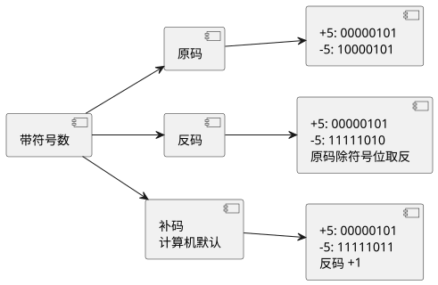
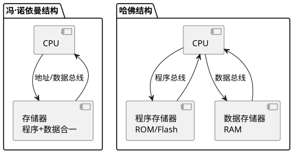
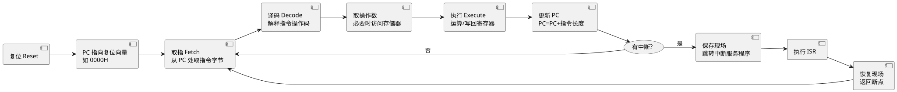

第 2 章 计算机基础与数制
学习目标
- 掌握二进制、八进制、十进制、十六进制四种数制及其相互转换方法
- 理解 BCD 码、ASCII 码、原码、反码、补码的编码规则与用途
- 熟练运用布尔代数的基本运算（与、或、非、异或）及真值表分析
- 区分哈佛结构与冯·诺依曼结构的存储器组织方式及其对单片机的影响
- 理解计算机"取指—译码—执行"的工作流程与指令周期概念
2.1 数制与转换
数制（Number System）是计数进位的规则。计算机内部由大量晶体管构成，每个晶体管只能表示"通"或"断"两种状态，因此计算机底层采用二进制（Binary）表示所有数据。为了便于书写和阅读，又引入了八进制（Octal）和十六进制（Hexadecimal）；人类日常使用的是十进制（Decimal）。
任意 $R$ 进制数 $N$ 可按位权展开：
$$N = \sum_{i=-m}^{n-1} a_i \cdot R^i$$
其中 $a_i$ 为第 $i$ 位的数码，满足 $0 \le a_i < R$；$R^i$ 为第 $i$ 位的位权（Weight）。例如十进制数 $253.5$ 可展开为 $2 \times 10^2 + 5 \times 10^1 + 3 \times 10^0 + 5 \times 10^{-1}$。
2.1.1 四种常用数制对照
| 数制 | 基数 R | 数码 | 后缀 | 前缀 | 示例 |
|---|---|---|---|---|---|
| 二进制 Binary | 2 | 0, 1 | B | 0b | 1010B = 0b1010 |
| 八进制 Octal | 8 | 0~7 | O/Q | 0 | 12O = 012 |
| 十进制 Decimal | 10 | 0~9 | D（可省略） | — | 10 = 10D |
| 十六进制 Hex | 16 | 0~9, A~F | H | 0x | 0xFF = 0FFH |
下表列出 0~15 范围内四种数制的对应关系，这是单片机编程中查阅最频繁的对照表。
| 十进制 | 二进制 | 八进制 | 十六进制 |
|---|---|---|---|
| 0 | 0000 | 0 | 0 |
| 1 | 0001 | 1 | 1 |
| 2 | 0010 | 2 | 2 |
| 3 | 0011 | 3 | 3 |
| 4 | 0100 | 4 | 4 |
| 5 | 0101 | 5 | 5 |
| 6 | 0110 | 6 | 6 |
| 7 | 0111 | 7 | 7 |
| 8 | 1000 | 10 | 8 |
| 9 | 1001 | 11 | 9 |
| 10 | 1010 | 12 | A |
| 11 | 1011 | 13 | B |
| 12 | 1100 | 14 | C |
| 13 | 1101 | 15 | D |
| 14 | 1110 | 16 | E |
| 15 | 1111 | 17 | F |
2.1.2 进制转换方法
1. 任意进制 → 十进制：按位权展开求和。例如二进制 $1011B = 1\times2^3 + 0\times2^2 + 1\times2^1 + 1\times2^0 = 11$；十六进制 $0xFF = 15\times16^1 + 15\times16^0 = 255$。
2. 十进制 → 任意进制：整数部分采用"除基取余法"，逆序读取余数；小数部分采用"乘基取整法"，顺序读取整数。例如将 $25$ 转换为二进制：
$$25 \div 2 = 12 \cdots 1,\quad 12 \div 2 = 6 \cdots 0,\quad 6 \div 2 = 3 \cdots 0,\quad 3 \div 2 = 1 \cdots 1,\quad 1 \div 2 = 0 \cdots 1$$
逆序读取余数得到 $25 = 11001B$。
3. 二进制 ↔ 八进制：每 3 位二进制对应 1 位八进制，整数从右向左、小数从左向右分组，不足补 0。如 $101110B = 101\,110 = 56O$。
4. 二进制 ↔ 十六进制：每 4 位二进制对应 1 位十六进制，分组方法同上。如 $10101111B = 1010\,1111 = 0xAF$。这也是单片机编程中最常用的转换，因为 1 字节恰好对应 2 位十六进制。
2.2 常用编码
2.2.1 BCD 码
BCD 码（Binary-Coded Decimal，二进制编码的十进制）用 4 位二进制数表示 1 位十进制数码，由于 $2^4=16$ 而 0~9 只用 10 个状态，所以有 6 个状态（1010~1111）冗余。最常用的是 8421 BCD 码，4 位的位权分别为 8、4、2、1。例如十进制数 $59$ 的 8421 BCD 码为 $0101\,1001$，注意它不同于二进制表示 $111011B$。
| 十进制 | 8421 BCD | 二进制（无符号） | 是否一致 |
|---|---|---|---|
| 5 | 0101 | 0101 | 是 |
| 9 | 1001 | 1001 | 是 |
| 10 | 0001 0000 | 1010 | 否 |
| 25 | 0010 0101 | 11001 | 否 |
BCD 码常用在数码管显示、实时时钟（RTC）等场景，DS1302、PCF8563 等 RTC 芯片内部时间寄存器即采用 BCD 编码，避免进制转换带来的舍入误差。
2.2.2 ASCII 码
ASCII 码（American Standard Code for Information Interchange，美国信息交换标准代码）用 7 位二进制数表示 128 个字符，包括 32 个控制字符（0x00~0x1F）、空格（0x20）、数字、大小写字母、标点符号。下表列出部分常用字符的 ASCII 码：
| 字符 | 十进制 | 十六进制 | 说明 |
|---|---|---|---|
| NUL | 0 | 0x00 | 字符串结束符 |
| LF | 10 | 0x0A | 换行 |
| CR | 13 | 0x0D | 回车 |
| SP | 32 | 0x20 | 空格 |
| '0'~'9' | 48~57 | 0x30~0x39 | 数字字符 |
| 'A'~'Z' | 65~90 | 0x41~0x5A | 大写字母 |
| 'a'~'z' | 97~122 | 0x61~0x7A | 小写字母 |
常用规律：数字字符 '0' 的 ASCII 是 0x30，'1'~'9' 依次递增；大写字母 'A' 是 0x41，小写字母 'a' 是 0x61，二者相差 0x20。在 C 语言中，可以用 `'A' + 32 == 'a'` 进行大小写转换。
2.2.3 原码、反码、补码
计算机需要表示带符号的整数，常用方案是把最高位作为符号位（Sign Bit）：0 表示正数，1 表示负数。在 8 位字长下：
- 原码（True Form）：符号位 + 数值位。$+5$ 的原码为 $0000\,0101$，$-5$ 的原码为 $1000\,0101$。
- 反码（One's Complement）：正数与原码相同；负数的反码为原码符号位不变、其余位取反。$-5$ 的反码为 $1111\,1010$。
- 补码（Two's Complement）：正数与原码相同；负数的补码为反码加 1。$-5$ 的补码为 $1111\,1011$。
补码是现代计算机存储带符号整数的标准方式，它将减法运算统一为加法运算，且 $+0$ 与 $-0$ 在补码下表示一致（均为 $0000\,0000$），8 位补码的表示范围为 $-128$ ~ $+127$。已知补码求真值的公式：
$$x = -a_{n-1}\cdot 2^{n-1} + \sum_{i=0}^{n-2} a_i \cdot 2^i$$
例如补码 $1111\,1011$ 对应的真值为 $-128 + 123 = -5$。

查看 PlantUML 源码
@startuml
skinparam defaultFontName "Microsoft YaHei"
left to right direction
component "带符号数" as A
component "原码" as B
component "反码" as C
component "补码\n计算机默认" as D
component "+5: 00000101\n-5: 10000101" as B1
component "+5: 00000101\n-5: 11111010\n原码除符号位取反" as C1
component "+5: 00000101\n-5: 11111011\n反码 +1" as D1
A --> B
A --> C
A --> D
B --> B1
C --> C1
D --> D1
@enduml2.3 布尔代数与逻辑运算
布尔代数（Boolean Algebra）由英国数学家 George Boole 于 1854 年提出，是数字电路与计算机逻辑设计的数学基础。它只有两个值：真（1，True）和假（0，False），基本运算包括与（AND）、或（OR）、非（NOT）。
2.3.1 基本逻辑运算
| A | B | A AND B A·B | A OR B A+B | NOT A ~A | A XOR B A^B |
|---|---|---|---|---|---|
| 0 | 0 | 0 | 0 | 1 | 0 |
| 0 | 1 | 0 | 1 | 1 | 1 |
| 1 | 0 | 0 | 1 | 0 | 1 |
| 1 | 1 | 1 | 1 | 0 | 0 |
在 C 语言中，对应位运算符为 `&`（按位与）、`|`（按位或）、`~`（按位取反）、`^`（按位异或）。下列常用公式在位运算编程中频繁出现：
$$A \cdot B + A \cdot \overline{B} = A \quad\text{（消去律）}$$
$$A + \overline{A}\cdot B = A + B \quad\text{（吸收律）}$$
$$\overline{A\cdot B} = \overline{A} + \overline{B} \quad\text{（德·摩根定律）}$$
2.3.2 单片机中常用位操作
下面是一段 STC 8位单片机上点亮 LED 并使用异或翻转引脚状态的示例代码，演示位与、位或、异或的实际用途：
#include <reg52.h>
sbit LED = P1^0; /* P1.0 接 LED，输出低电平点亮 */
sbit KEY = P3^2; /* P3.2 接按键，按下为 0 */
void delay(unsigned int t) {
while (t--) {
unsigned char i = 120;
while (i--);
}
}
void main(void) {
unsigned char mask = 0x01;
P1 = 0xFF; /* 复位后熄灭所有 LED */
LED = 0; /* 位操作：点亮 P1.0 */
while (1) {
if (KEY == 0) {
delay(20); /* 软件消抖 */
if (KEY == 0) {
P1 = P1 ^ mask; /* 异或切换最低位 LED 状态 */
while (KEY == 0);/* 等待按键释放 */
}
}
}
}
异或运算 $A \oplus 1 = \overline{A}$，$A \oplus 0 = A$，因此 `P1 ^ 0x01` 等价于"切换最低位"，是位翻转的常用技巧。位与 `&` 常用于清零（屏蔽某位为 0），位或 `|` 常用于置位（置某位为 1）。
2.4 计算机体系结构
计算机体系结构主要有两种：冯·诺依曼结构（Von Neumann Architecture）与哈佛结构（Harvard Architecture）。
2.4.1 冯·诺依曼结构
由美籍匈牙利数学家冯·诺依曼于 1945 年提出，核心思想是"存储程序"：程序和数据存放在同一存储器中，CPU 通过同一组总线分时访问。其优点是硬件简单、成本低，缺点是 CPU 取指与访存不能并行，存在"冯·诺依曼瓶颈"。
2.4.2 哈佛结构
哈佛结构将程序存储器与数据存储器分开，各自拥有独立总线，CPU 可以同时取指令和读写数据，提高了吞吐率。MCS-51 系列、大多数 DSP、ARM Cortex-M3/M4（采用改进型哈佛结构）均采用哈佛结构。

查看 PlantUML 源码
@startuml
skinparam defaultFontName "Microsoft YaHei"
top to bottom direction
package "冯·诺依曼结构" as NV {
component "CPU" as N1
component "存储器\n程序+数据合一" as N2
N1 --> N2 : 地址/数据总线
N2 --> N1
}
package "哈佛结构" as HV {
component "CPU" as H1
component "程序存储器\nROM/Flash" as H2
component "数据存储器\nRAM" as H3
H1 --> H2 : 程序总线
H1 --> H3 : 数据总线
H2 --> H1
H3 --> H1
}
@enduml| 对比项 | 冯·诺依曼结构 | 哈佛结构 |
|---|---|---|
| 存储器组织 | 程序与数据合一 | 程序与数据分离 |
| 总线 | 共用一组总线 | 程序总线 + 数据总线独立 |
| 取指/访存 | 分时串行 | 可并行 |
| 硬件复杂度 | 低 | 较高 |
| 典型代表 | x86 PC、通用计算机 | MCS-51、DSP、ARM Cortex-M |
2.5 计算机工作流程
CPU 的工作过程本质上是不断重复"取指—译码—执行"（Fetch-Decode-Execute）三个阶段的循环，每完成一次称为一个指令周期（Instruction Cycle）。一个指令周期通常包含若干机器周期，一个机器周期又包含若干时钟周期。

查看 PlantUML 源码
@startuml
skinparam defaultFontName "Microsoft YaHei"
left to right direction
component "复位 Reset" as A
component "PC 指向复位向量\n如 0000H" as B
component "取指 Fetch\n从 PC 处取指令字节" as C
component "译码 Decode\n解释指令操作码" as D
component "取操作数\n必要时访问存储器" as E
component "执行 Execute\n运算/写回寄存器" as F
component "更新 PC\nPC=PC+指令长度" as G
usecase "有中断?" as H
component "保存现场\n跳转中断服务程序" as I
component "执行 ISR" as J
component "恢复现场\n返回断点" as K
A --> B
B --> C
C --> D
D --> E
E --> F
F --> G
G --> H
H --> C : 否
H --> I : 是
I --> J
J --> K
K --> C
@enduml2.5.1 时钟与周期概念
- 时钟周期（Clock Cycle / T 周期）：晶振周期的倒数，是 CPU 最小时间单位。STC 通常使用 11.0592 MHz 晶振，对应 $T \approx 90.4$ ns。
- 机器周期（Machine Cycle）：MCS-51 一个机器周期固定为 12 个时钟周期，在 12 MHz 晶振下为 $1\,\mu s$，是定时器/计数器计数的基本单位。
- 指令周期（Instruction Cycle）：执行一条指令所需的时间，MCS-51 指令大多为 1~2 个机器周期，乘除指令最长需 4 个机器周期。
计算定时器初值是 MCS-51 应用中最常见的运算。例如使用定时器 0 工作方式 1（16 位）产生 50 ms 定时，晶振 12 MHz：机器周期为 $1\,\mu s$，需计数 $50000$ 次，初值为 $65536 - 50000 = 15536 = 3CB0H$，对应 TH0 = 0x3C，TL0 = 0xB0。C 代码如下：
#include <reg52.h>
sbit LED = P1^0;
unsigned char cnt = 0;
void Timer0_Init(void) {
TMOD &= 0xF0; /* 清 T0 方式位 */
TMOD |= 0x01; /* T0 方式 1：16 位定时器 */
TH0 = 0x3C; /* 50ms 初值高位 */
TL0 = 0xB0; /* 50ms 初值低位 */
ET0 = 1; /* 允许 T0 中断 */
EA = 1; /* 开总中断 */
TR0 = 1; /* 启动 T0 */
}
void main(void) {
LED = 0;
Timer0_Init();
while (1);
}
/* T0 中断服务程序：每 50ms 触发一次 */
void Timer0_ISR(void) interrupt 1 {
TH0 = 0x3C; /* 重装初值 */
TL0 = 0xB0;
if (++cnt >= 20) { /* 20 次 = 1 秒 */
cnt = 0;
LED = !LED; /* LED 翻转，秒级闪烁 */
}
}
该程序演示了机器周期与指令周期的实际意义：定时器溢出速率由晶振频率和初值共同决定，初值计算直接依赖数制转换（十六进制 3CB0H = 十进制 15536）。
本章小结
- 四种常用数制：二进制（B）、八进制（O）、十进制（D）、十六进制（H），单片机编程以二进制和十六进制为主。
- 数制转换的核心是"按位权展开求和"与"除基取余、乘基取整"。
- 常用编码：BCD 码用于 RTC 时间与数码管显示，ASCII 码用于字符通信，补码是带符号整数在计算机中的标准表示。
- 布尔代数基本运算为与、或、非、异或，C 语言中对应 `&`、`|`、`~`、`^` 位运算符，是位级控制的基础。
- 哈佛结构将程序与数据存储器分离，CPU 可并行取指与访存，是单片机的常用结构。
- CPU 工作流程是"取指—译码—执行"循环，时钟周期、机器周期、指令周期的换算直接影响定时器与延时程序的编写。
思考题与习题
- 将下列各数转换为十进制：(1) 10110101B；(2) 0x7F；(3) 17O。
- 将十进制数 200 分别转换为二进制、八进制和十六进制，并验证结果。
- 8 位补码 10000000B 表示的真值是多少？它与原码 10000000B 有什么不同？
- 用 C 语言的位运算实现：将变量 x 的第 3 位置 1、第 5 位清 0、第 2 位取反。
- 已知字符 'A' 的 ASCII 码是 0x41，写出 'F' 和 'f' 的 ASCII 码，并设计一段 C 代码将字符串中的大写字母全部转换为小写。
- 简述哈佛结构与冯·诺依曼结构的主要区别，并说明 STC 属于哪种结构。
参考文献
- 张毅刚. 单片机原理及应用——C51 编程 + Proteus 仿真（第 4 版）[M]. 北京：高等教育出版社, 2021.
- 唐朔飞. 计算机组成原理（第 3 版）[M]. 北京：高等教育出版社, 2020.
- STC 官方. STC89C52RC 数据手册 [Z]. 2024. https://www.stcmcudata.com/
- 何立民. 单片机高级教程——应用与设计（第 3 版）[M]. 北京：北京航空航天大学出版社, 2018.
- Patterson D A, Hennessy J L. Computer Organization and Design RISC-V Edition (2nd ed.) [M]. Morgan Kaufmann, 2020.